Code
library(astsa)
tsplot(soi, col=4, ylim = c(-1, 1.15))
lines(ksmooth(time(soi), soi, "normal", bandwidth=1), lwd=2, col=6)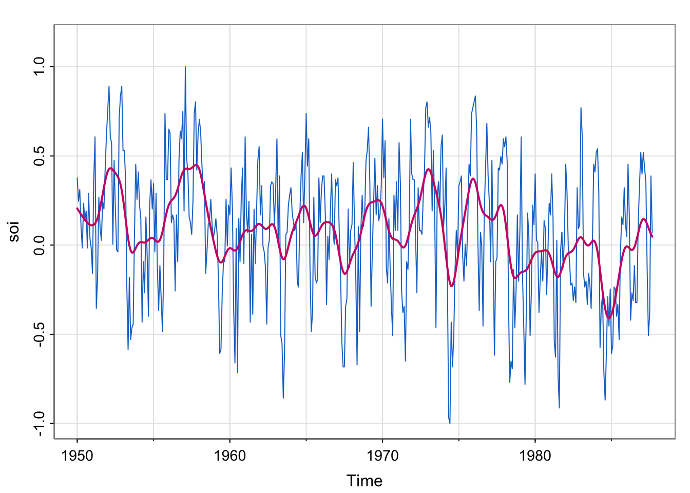
SOI : Southern Oscillation Index, a climate variable. Low values correspond to warming and high values correspond to cooling. Plotting a smoother estimate (say, kernel) reveals the El Niño cycle. (we explored this in Lecture 6).
library(astsa)
tsplot(soi, col=4, ylim = c(-1, 1.15))
lines(ksmooth(time(soi), soi, "normal", bandwidth=1), lwd=2, col=6)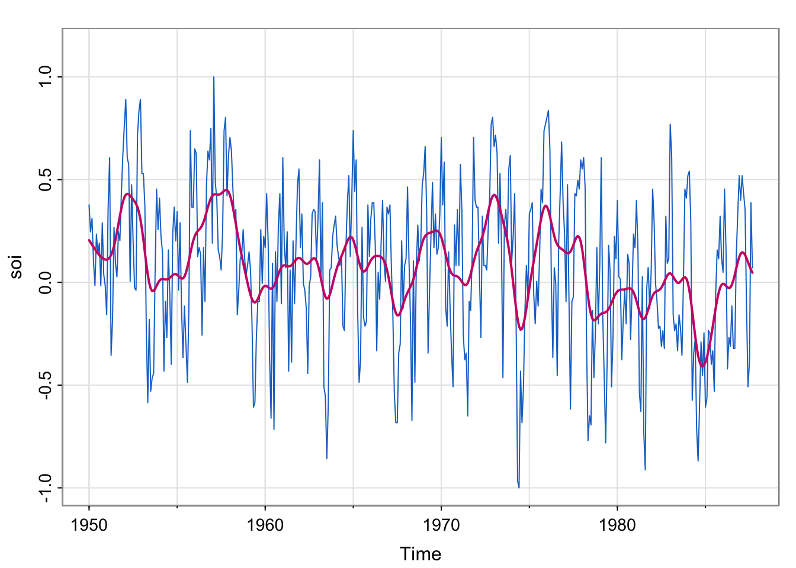
soi_ksmooth <- ksmooth(time(soi), soi, "normal", bandwidth=1)
detrended <- soi-soi_ksmooth$y
## acf of soi/ detrended soi
par(mfrow = c(2,1))
acf1(soi) [1] 0.60 0.37 0.21 0.05 -0.11 -0.19 -0.18 -0.10 0.05 0.22 0.36 0.41
[13] 0.31 0.10 -0.06 -0.17 -0.29 -0.37 -0.32 -0.19 -0.04 0.15 0.31 0.35
[25] 0.25 0.10 -0.03 -0.16 -0.28 -0.37 -0.32 -0.16 -0.02 0.17 0.33 0.39
[37] 0.30 0.16 0.00 -0.13 -0.24 -0.27 -0.25 -0.13 0.06 0.21 0.38 0.40acf1(detrended)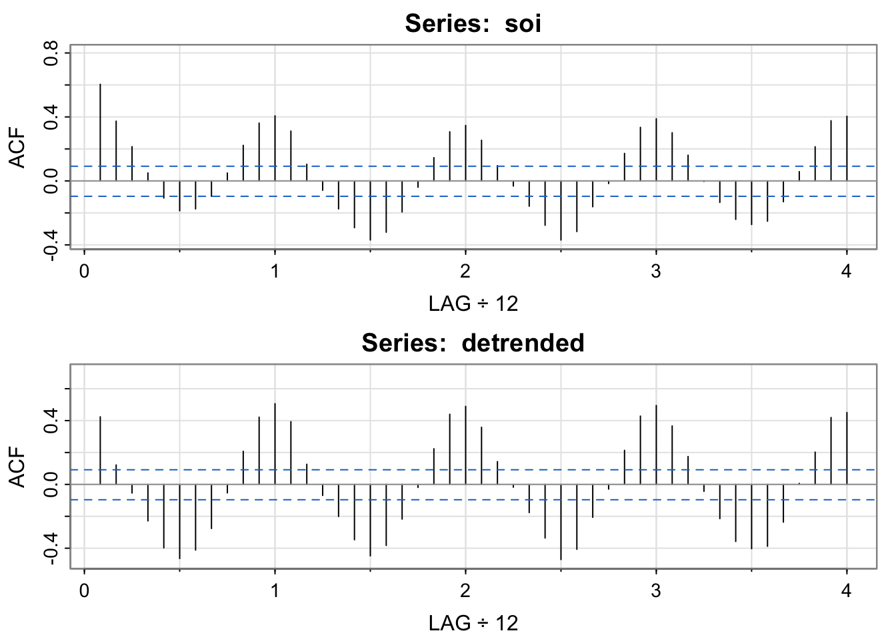
[1] 0.42 0.12 -0.05 -0.23 -0.40 -0.46 -0.41 -0.28 -0.05 0.21 0.42 0.51
[13] 0.39 0.13 -0.07 -0.20 -0.35 -0.45 -0.38 -0.22 -0.02 0.22 0.44 0.49
[25] 0.36 0.14 -0.02 -0.18 -0.34 -0.47 -0.41 -0.21 -0.03 0.21 0.43 0.49
[37] 0.37 0.17 -0.04 -0.21 -0.36 -0.40 -0.39 -0.24 0.01 0.20 0.42 0.45par(mfrow = c(1,1))Note the clear seasonal pattern– it’s yearly (monthly frequency divided by 12 means a lag of 1 is a year). Also, values +/-1 year apart have nearly identical correlation structure to those +/- 2 years apart, and so on (the heights of the “bumps” are about the same. I’m showing the detrended acf to emphasize that once we have “detrended” out the El Niño pattern, we still see an annual pattern.
The pattern in the detrended acf might be called “residual temporal structure”, specifically, a seasonal pattern.
library(astsa)
lag1.plot(soi, 12, col=4, cex=1) # Figure 3.10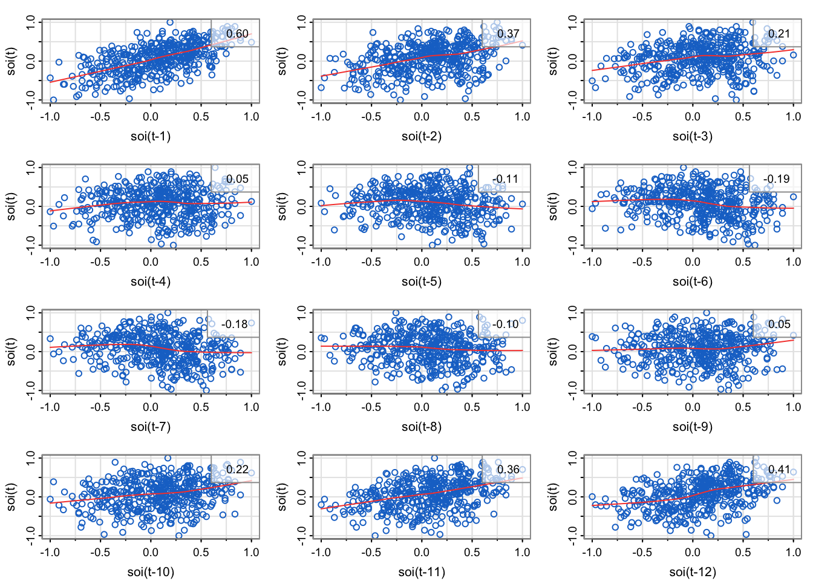
Explain how the scatterplots below relate to the sample autocorrelation function of soi.
Do the lagplots/loess trend estimates suggest that sample autocorrelation is a meaningful measurement for the temporal lag relationships?
library(astsa)
lag1.plot(soi, 12, col=4, cex=1) # Figure 3.10Explain how the scatterplots below relate to the sample autocorrelation function of soi.
The sample correlation in the upper right corner of each of the scatterplots match the height of the bar for the corresponding lag.
The plot in the upper left is the lag1 scatterplot (soi(t) vs. soi(t-1)). The correlation is 0.6, which is the height of the bar for lag 1 (0.08 on x-axis) is in the acf.
The plot in the middle left is the lag2 scatterplot (soi(t) vs. soi(t-2)). The correlation is 0.37, which is the height of the bar for lag 2 (0.17 on the x-axis) is in the acf.
…
the third row, first column is the lag7 scatterplot (soi(t) vs. soi(t-7)). The correlation is -0.18, which is the height of the bar for lag 7 (0.58 on x-axis) is in the acf.
…
The plot in the upper left is the lag11 scatterplot (soi(t) vs. soi(t-11)). The correlation is 0.36, which is the height of the bar for lag 11 (.92 on x-axis) is in the acf.
The plot in the middle left is the lag12 scatterplot (soi(t) vs. soi(t-12)). The correlation is 0.41, which is the height of the bar for lag 12 (1 on x-axis) is in the acf.
Do the lagplots/loess trend estimates suggest that sample autocorrelation is a meaningful measurement for the temporal lag relationships?
Note that loess is a method for estimating a trend between any two variables (last lecture, one variable was deterministic time) that can allow for nonlinear relationships. Most of the loess fits look fairly linear, meaning that the autocorrelation is meaningful (since correlation is a linear measurement of strength, but we can compute correlation for any two vectors regardless of how inappropriate it is).
In an empirical sense, no. We would need to compute the correlation of lags 13, 14, … 4*12 = 48, since that’s how far the x-axis goes on the sample autocorrelation estimate plotted by the acf1 function.
In a statistical sense, yes. It seems like the cyclical pattern is very stable (no drop off at later lags), so we could probably represent all the temporal structure with a sinusoid based on the month:
month <- seq(from = 0, to = 2*pi, by = 2*pi/12)
sinusoid <- cos(month)
plot(1:13, sinusoid, xlab = "\'month\'", ylab = "cos(\"month\")")
abline(h = 0)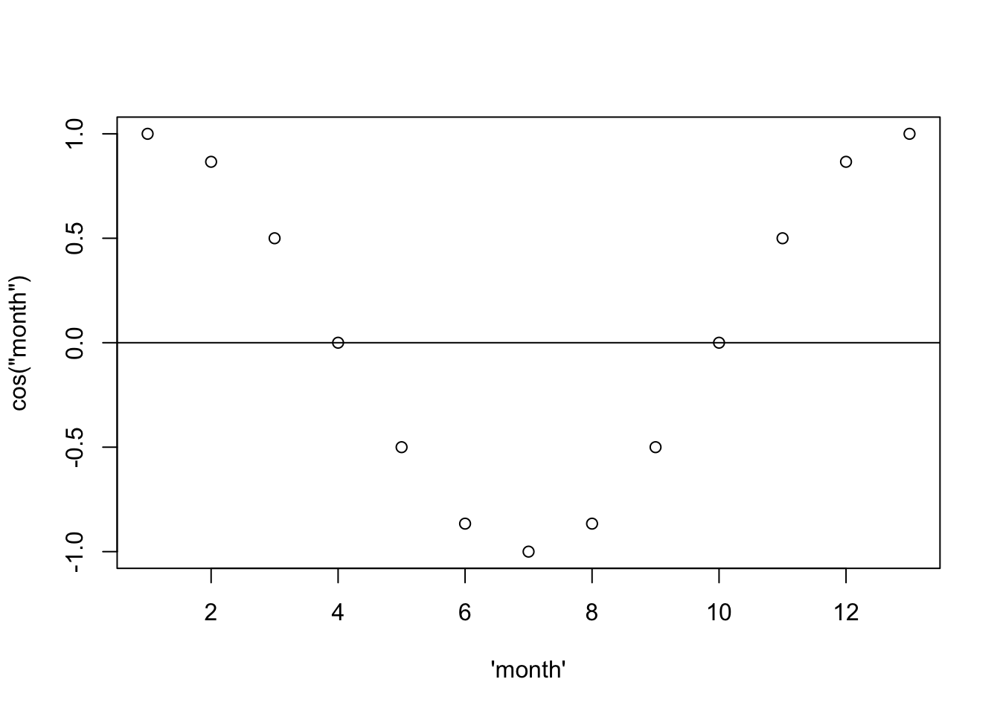
Then if we repeat that four times:
month <- seq(from = 0, to = 8*pi, by = 2*pi/12)
sinusoid <- cos(month)
plot(1:49, sinusoid, xlab = "Month (#)", ylab = "cos(\"month\")")
abline(h = 0)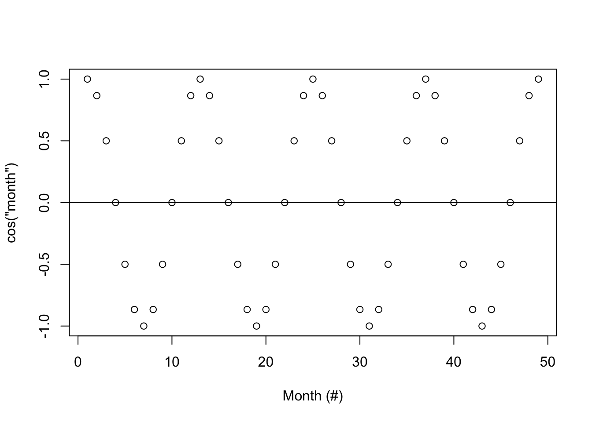
… and add vertical lines…
month <- seq(from = 0, to = 8*pi, by = 2*pi/12)
sinusoid <- cos(month)
plot(1:49, sinusoid, xlab = "\'month\'", ylab = "cos(\"month\")")
abline(h = 0)
segments(x0 = 1:49, y0= 0, y1 = sinusoid)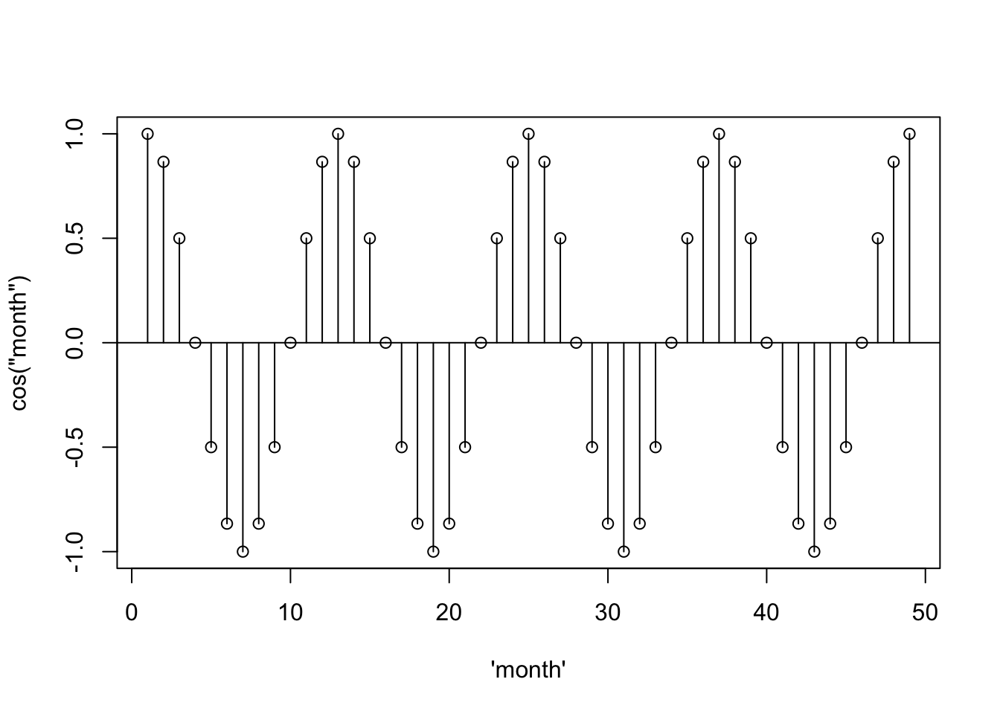
… it starts to look like the acf– the scaling is just off.
par(mfrow = c(2,1))
acf1(soi) [1] 0.60 0.37 0.21 0.05 -0.11 -0.19 -0.18 -0.10 0.05 0.22 0.36 0.41
[13] 0.31 0.10 -0.06 -0.17 -0.29 -0.37 -0.32 -0.19 -0.04 0.15 0.31 0.35
[25] 0.25 0.10 -0.03 -0.16 -0.28 -0.37 -0.32 -0.16 -0.02 0.17 0.33 0.39
[37] 0.30 0.16 0.00 -0.13 -0.24 -0.27 -0.25 -0.13 0.06 0.21 0.38 0.40plot(1:49, sinusoid, xlab = "\'month\'", ylab = "cos(\"month\")")
abline(h = 0)
segments(x0 = 1:49, y0= 0, y1 = sinusoid)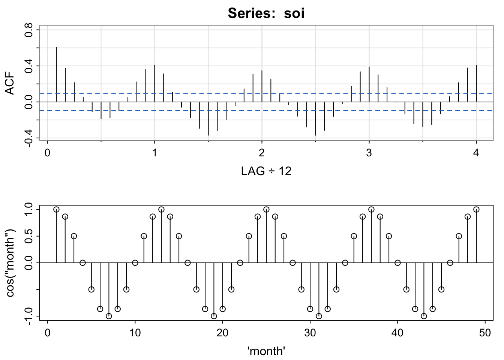
par(mfrow = c(1,1))This is explored in chapters 6 and 7 (possible end of quarter topic).
set.seed(807) # so you can reproduce these results
n <- length(soi)
x = 0.5*cos(2*pi*1:n/12) + rnorm(n,0,.25)
z1 = cos(2*pi*1:n/12)
z2 = sin(2*pi*1:n/12)
summary(fit <- lm(x~ 0 + z1 + z2)) # zero to exclude intercept
##
## Call:
## lm(formula = x ~ 0 + z1 + z2)
##
## Residuals:
## Min 1Q Median 3Q Max
## -0.70187 -0.16132 0.00053 0.15572 0.62818
##
## Coefficients:
## Estimate Std. Error t value Pr(>|t|)
## z1 0.494705 0.015859 31.194 <2e-16 ***
## z2 -0.001529 0.015824 -0.097 0.923
## ---
## Signif. codes: 0 '***' 0.001 '**' 0.01 '*' 0.05 '.' 0.1 ' ' 1
##
## Residual standard error: 0.2384 on 451 degrees of freedom
## Multiple R-squared: 0.6833, Adjusted R-squared: 0.6819
## F-statistic: 486.5 on 2 and 451 DF, p-value: < 2.2e-16
par(mfrow=c(2,1))
tsplot(x, col=4)
tsplot(x, ylab=expression(hat(x)), col=astsa.col(4, .5))
lines(fitted(fit), col=2, lwd=2)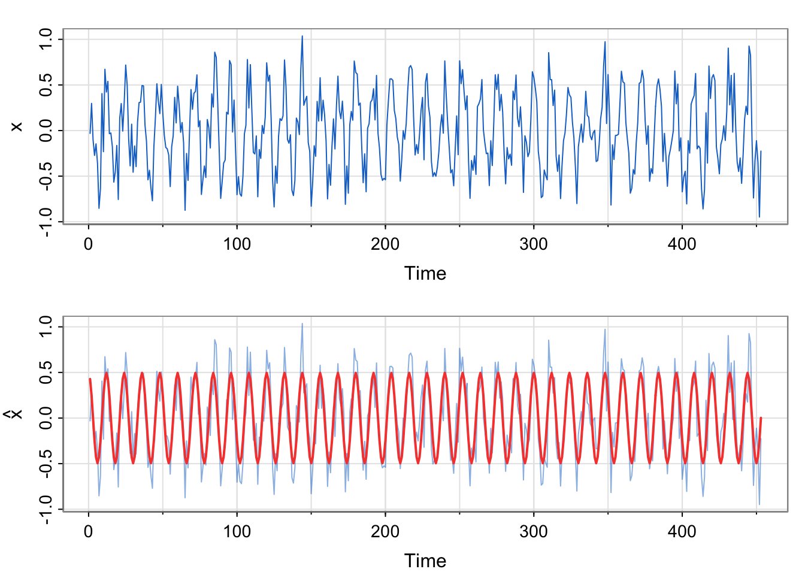
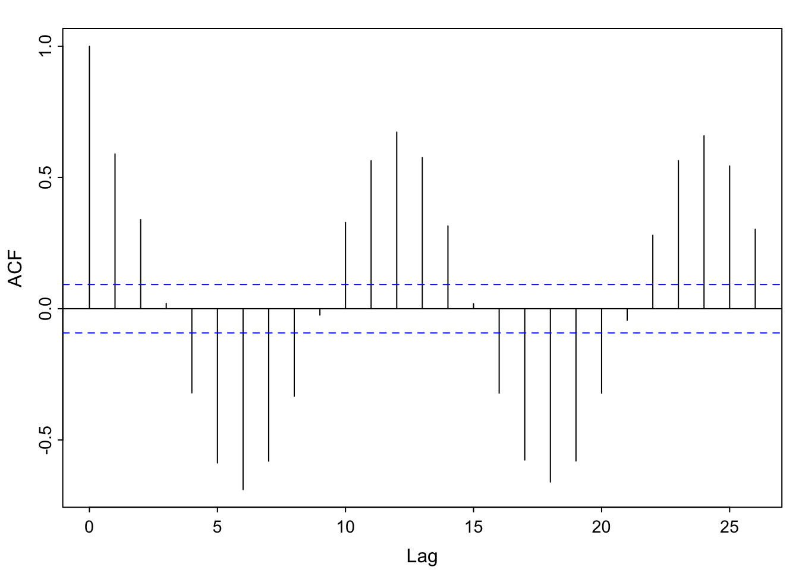
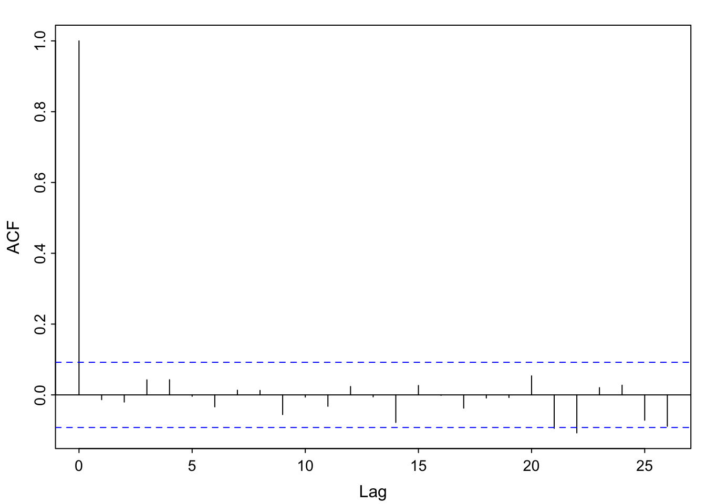
x relate to the previous example?soi to the autocorrelation function of the simulated series.set.seed(807) # so you can reproduce these results
n <- length(soi)
x = 0.5*cos(2*pi*1:n/12) + rnorm(n,0,.25)
z1 = cos(2*pi*1:n/12)
z2 = sin(2*pi*1:n/12)
summary(fit <- lm(x~ 0 + z1 + z2)) # zero to exclude intercept
##
## Call:
## lm(formula = x ~ 0 + z1 + z2)
##
## Residuals:
## Min 1Q Median 3Q Max
## -0.70187 -0.16132 0.00053 0.15572 0.62818
##
## Coefficients:
## Estimate Std. Error t value Pr(>|t|)
## z1 0.494705 0.015859 31.194 <2e-16 ***
## z2 -0.001529 0.015824 -0.097 0.923
## ---
## Signif. codes: 0 '***' 0.001 '**' 0.01 '*' 0.05 '.' 0.1 ' ' 1
##
## Residual standard error: 0.2384 on 451 degrees of freedom
## Multiple R-squared: 0.6833, Adjusted R-squared: 0.6819
## F-statistic: 486.5 on 2 and 451 DF, p-value: < 2.2e-16
par(mfrow=c(2,1))
tsplot(x, col=4)
tsplot(x, ylab=expression(hat(x)), col=astsa.col(4, .5))
lines(fitted(fit), col=2, lwd=2)x relate to the previous example?We commented that the residual temporal structure is seasonal and could be modeled by a sinusoid. Since the correlation appears to start at a high point, then decrease and reach a maximum at 1 (12 months), we choose a cosine over a sine. Here, we are simulating seasonal data, not analyzing the soi data. We do generate the same number of observations as a
\[ \hat{x} = 0.495\cos \left (\frac{2\pi t}{12} \right) -0.002\sin \left (\frac{2\pi t}{12} \right) \]
No. The estimated equation weights the sine term as essentially 0, and the cosine term near 0.5. The model was generated using \(0.5\cos \left (\frac{2\pi t}{12} \right)\) for the trend component. Additionally, the acf of the residuals looks like white noise, which is what we simulated (with a smaller standard deviation to mimic the range of the soi data, though).
soi to the autocorrelation function of the simulated series.They look very similar.
z1 = cos(2*pi*1:n/12)
z2 = sin(2*pi*1:n/12)
summary(fit <- lm(soi~ 0 + z1 + z2)) # zero to exclude intercept
##
## Call:
## lm(formula = soi ~ 0 + z1 + z2)
##
## Residuals:
## Min 1Q Median 3Q Max
## -0.91474 -0.13174 0.08774 0.31774 0.81148
##
## Coefficients:
## Estimate Std. Error t value Pr(>|t|)
## z1 0.31292 0.02118 14.775 < 2e-16 ***
## z2 0.07348 0.02113 3.477 0.000556 ***
## ---
## Signif. codes: 0 '***' 0.001 '**' 0.01 '*' 0.05 '.' 0.1 ' ' 1
##
## Residual standard error: 0.3184 on 451 degrees of freedom
## Multiple R-squared: 0.3385, Adjusted R-squared: 0.3356
## F-statistic: 115.4 on 2 and 451 DF, p-value: < 2.2e-16
par(mfrow=c(2,1))
tsplot(ts(soi), col=4)
tsplot(ts(soi), ylab=expression(hat(soi)), col=astsa.col(4, .5))
lines(fitted(fit), col=2, lwd=2)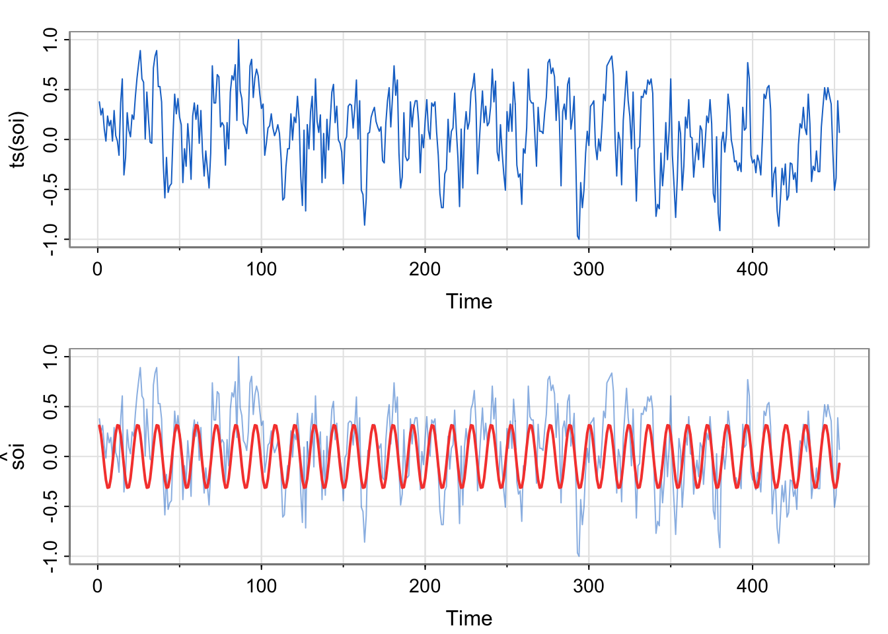
par(mfrow=c(1,1))
acf1(ts(resid(fit),freq = 12))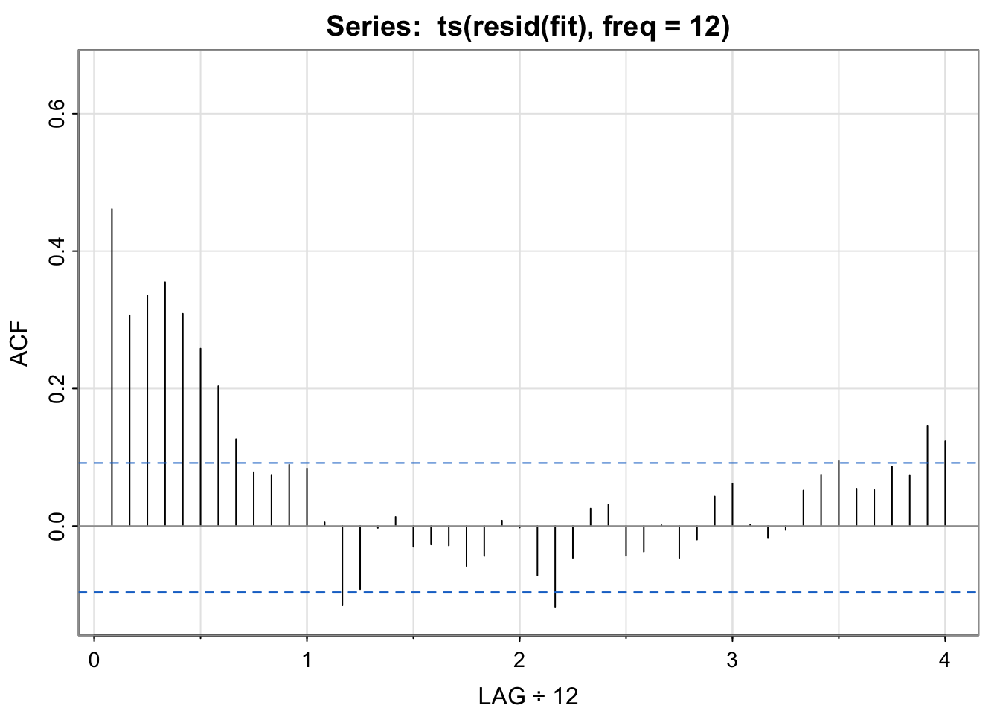
## [1] 0.46 0.31 0.34 0.35 0.31 0.26 0.20 0.13 0.08 0.07 0.09 0.08
## [13] 0.01 -0.12 -0.09 0.00 0.01 -0.03 -0.03 -0.03 -0.06 -0.04 0.01 0.00
## [25] -0.07 -0.12 -0.05 0.03 0.03 -0.04 -0.04 0.00 -0.05 -0.02 0.04 0.06
## [37] 0.00 -0.02 -0.01 0.05 0.07 0.09 0.05 0.05 0.09 0.07 0.15 0.12fit above vs. in Activity 2?soi appear to be captured by the seasonal model?z1 = cos(2*pi*1:n/12)
z2 = sin(2*pi*1:n/12)
soi_fit <-lm(soi~ z1 + z2)
summary(soi_fit) # zero to exclude intercept
##
## Call:
## lm(formula = soi ~ z1 + z2)
##
## Residuals:
## Min 1Q Median 3Q Max
## -0.9967 -0.2122 0.0053 0.2353 0.7295
##
## Coefficients:
## Estimate Std. Error t value Pr(>|t|)
## (Intercept) 0.08146 0.01448 5.627 3.23e-08 ***
## z1 0.31378 0.02050 15.310 < 2e-16 ***
## z2 0.07299 0.02045 3.569 0.000396 ***
## ---
## Signif. codes: 0 '***' 0.001 '**' 0.01 '*' 0.05 '.' 0.1 ' ' 1
##
## Residual standard error: 0.3081 on 450 degrees of freedom
## Multiple R-squared: 0.3549, Adjusted R-squared: 0.352
## F-statistic: 123.8 on 2 and 450 DF, p-value: < 2.2e-16
par(mfrow=c(2,1))
tsplot(ts(soi), col=4)
tsplot(ts(soi), ylab=expression(hat(x)), col=astsa.col(4, .5))
lines(soi_fit$fitted.values, col=2, lwd=2)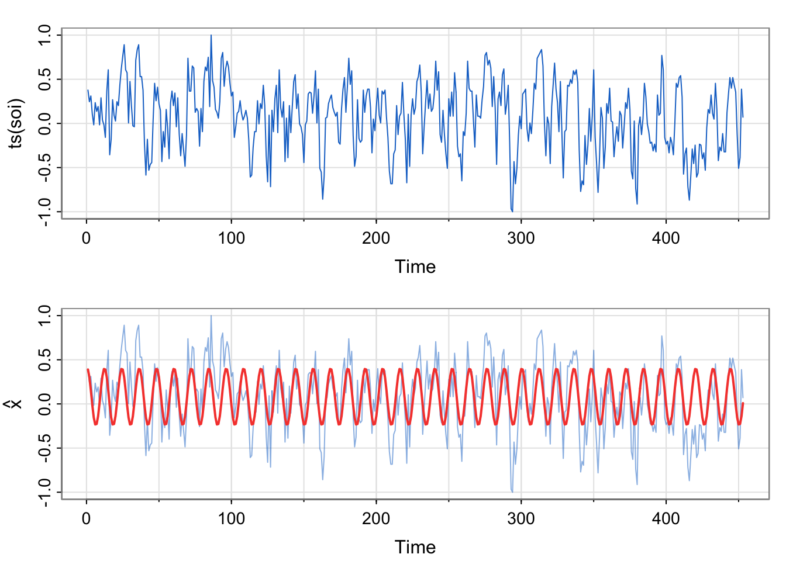
par(mfrow=c(1,1))
acf1(ts(resid(fit),freq = 12))## [1] 0.46 0.31 0.34 0.35 0.31 0.26 0.20 0.13 0.08 0.07 0.09 0.08
## [13] 0.01 -0.12 -0.09 0.00 0.01 -0.03 -0.03 -0.03 -0.06 -0.04 0.01 0.00
## [25] -0.07 -0.12 -0.05 0.03 0.03 -0.04 -0.04 0.00 -0.05 -0.02 0.04 0.06
## [37] 0.00 -0.02 -0.01 0.05 0.07 0.09 0.05 0.05 0.09 0.07 0.15 0.12fit above vs. in Activity 2?Here, we are modeling the real soi data, not the simulated data. However, we are using the same format of the model (just estimating the two amplitudes, one each for the sine and cosine terms).
\[ \hat{x} = 0.313\cos \left (\frac{2\pi t}{12} \right) +0.073 \sin \left (\frac{2\pi t}{12} \right ) \]
soi appear to be captured by the seasonal model?No. If the temporal structure were captured, the acf of the residuals would look like white noise, but it does not. (Harmonics??)
This is to make the lag comparable to the other acf plots we were looking at earlier. The residual series resid(fit) is just a vector, not a ts, so the acf will assume a frequency of 1, or monthly. The shape of the plot will look the same, it’s just a labeling consistency thing that captures the annual pattern.
There might be cases where the frequency is something else, but maybe not in the context of annual seasonality.
What is the period for the following seasonal patterns for data collected every minute?
Hourly
Daily
Weekly
Monthly
What is the period for the following seasonal patterns for data collected every minute?
Hourly: 60
Daily: 60*24 = 1440
Weekly: 1440*7 = 10080
Monthly = 60*24*30 = 43,200 (approximation)
Yearly = 60*24*365.25 = 525,960
#install.packages("lubridate")
library(lubridate)
?period| Concept | Term in S&S (red book) | Term in FPP (free book) |
|---|---|---|
| Variation between a max and a min (fixed period) | cyclic (introduced as precise seasonality after talking about seasonal differencing in SARIMA model section) | seasonal |
| Variation between a max and a min (random period) | pseudo*-cyclic | cyclic |
*pseudo means “false”
The same word can mean very different things. Yikes!!! This is why we need a little math (understanding what a period is) to be able to communicate successfully about time series.
I skipped over the lagplots of